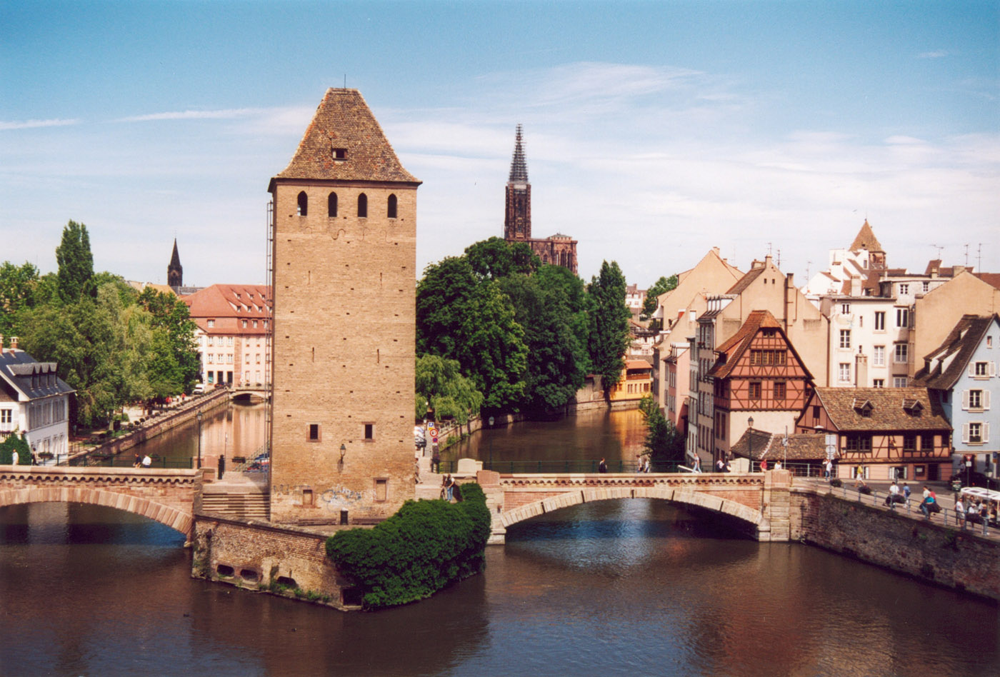

La Petite France

La petite France est l'un des plus beaux quartiers de Strasbourg. Tu pourras y trouver plein de boutiques de souvenirs et de restaurants où tu pourras déguster de bons plats. Regarde comme ces rues sont jolies avec ces petites maisons à colombage.
Jeux
Next